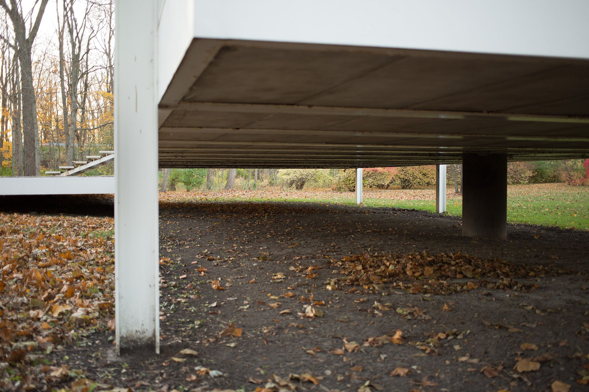
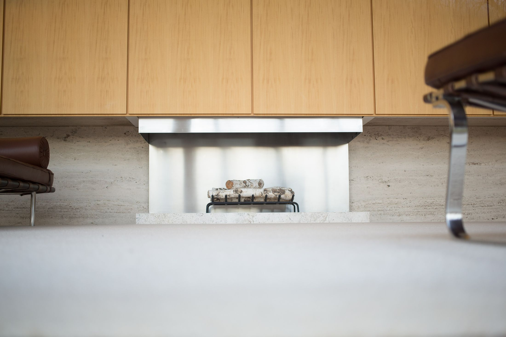
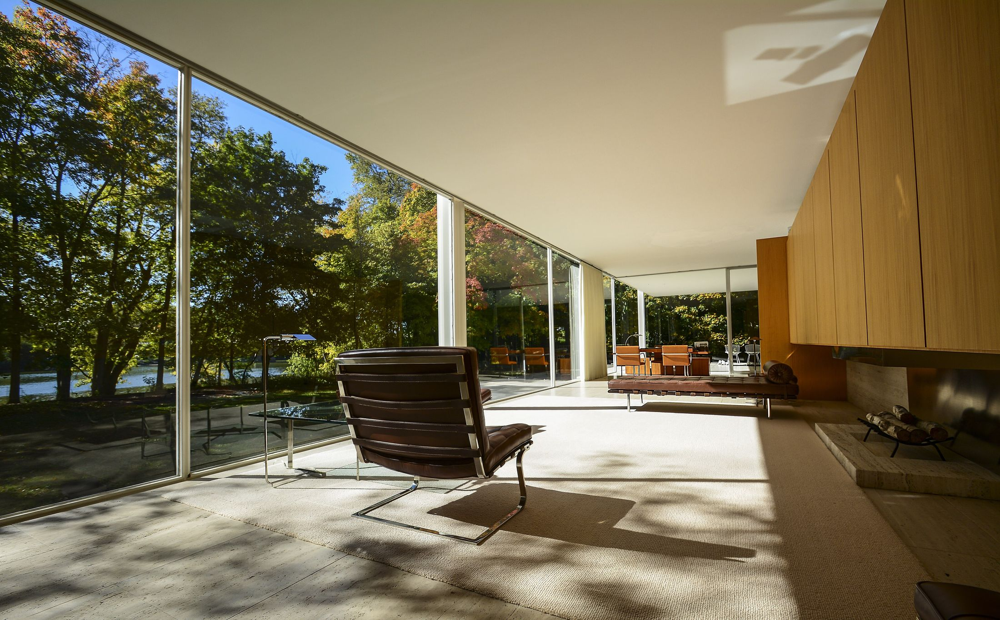
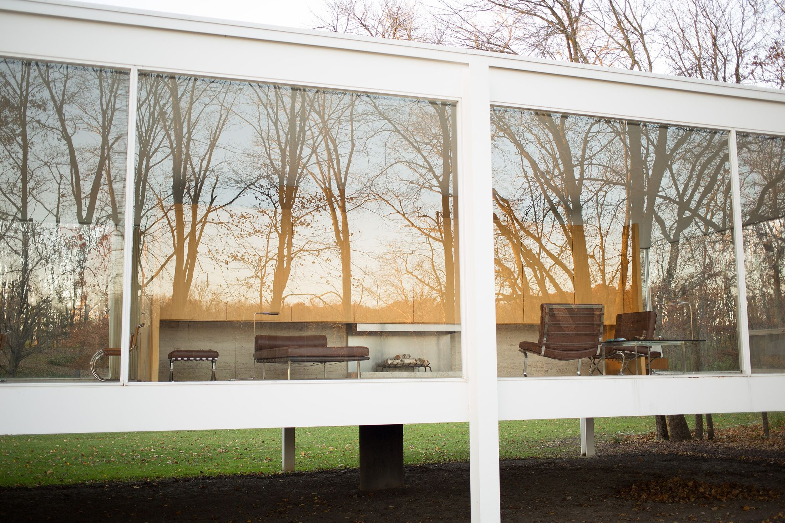
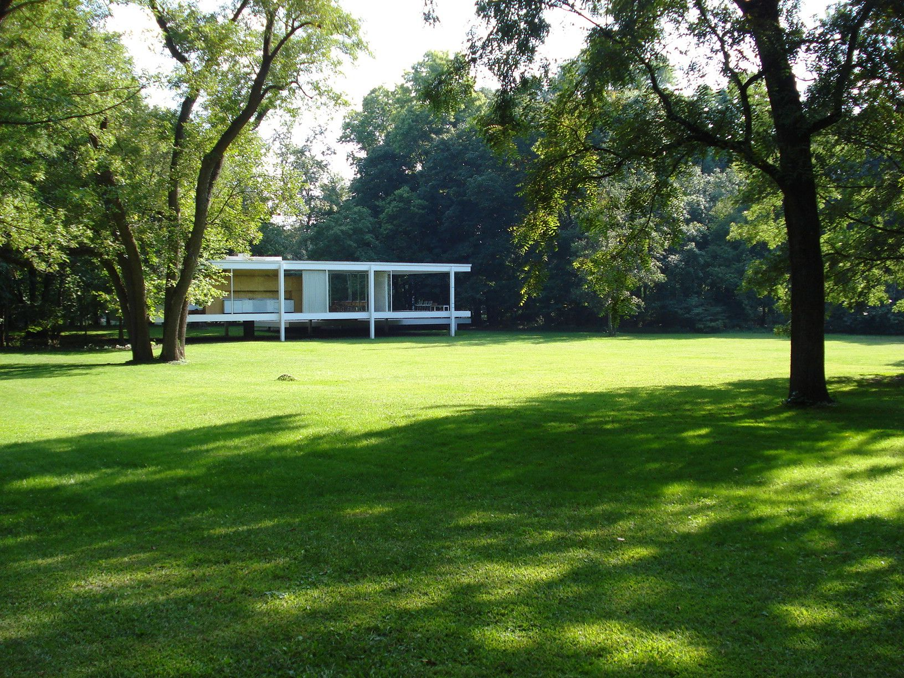
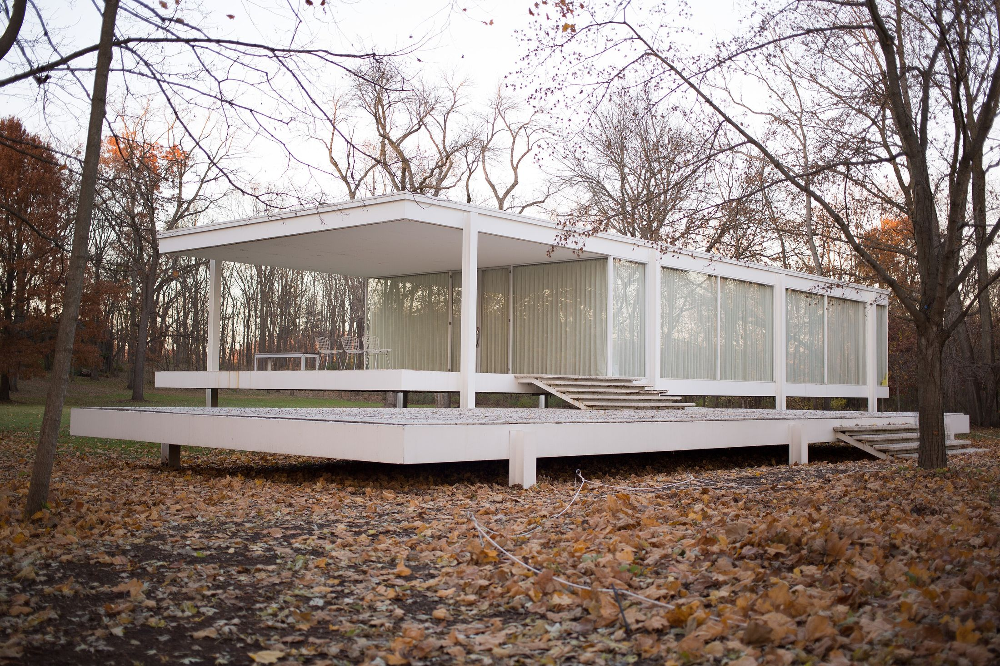
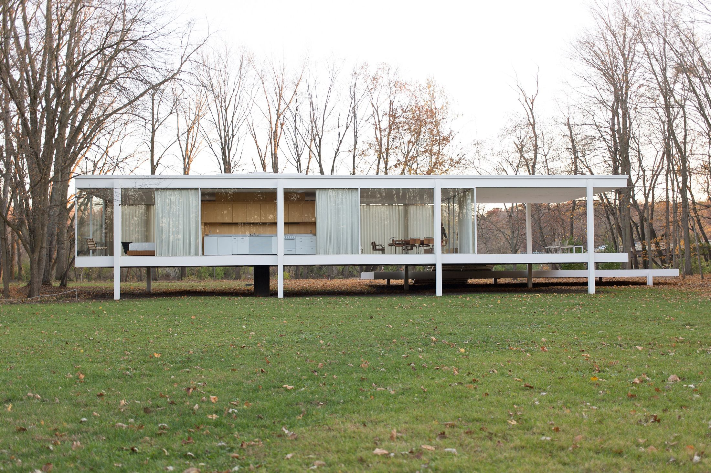
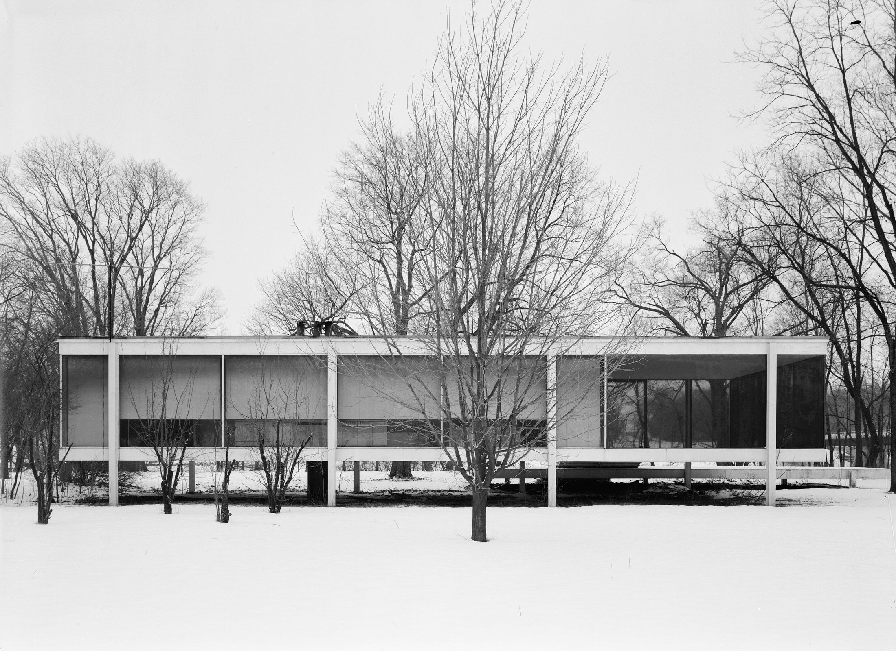

Mies van der Rohe, 1951. One glass room lifted above a meadow by the Fox River. Scroll to watch it go from a line on paper to the real photographs.






Designed by Ludwig Mies van der Rohe for Dr Edith Farnsworth as a weekend retreat, about 60 miles west of Chicago.


1971TodayLeft: Jack E. Boucher for the Historic American Buildings Survey, 1971, public domain. Right: Victor Grigas, CC BY-SA. Taken from a similar spot on the meadow, decades apart.
Facts: Wikipedia, National Trust for Historic Preservation, National Park Service. All photographs are real and openly licensed; select a caption to see the licence. The 3D model above is an interpretation and is not an exact survey of the house.
This page shows the format with a house whose photographs are openly licensed. The Farnsworth House is a museum run by the National Trust and is not for sale. For your listing, we use your own photographs and plans.